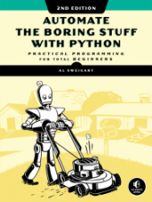
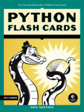
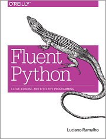
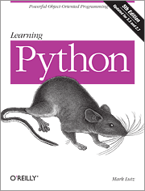
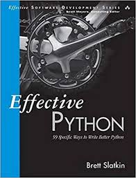
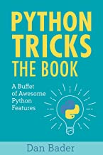
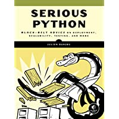
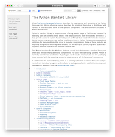
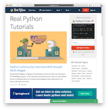

General Python Resources
The guiding principle for what to include in Python Crash Course was, “What’s the least you need to know in order to begin working on meaningful projects?” The answer to that question became the first half of the book. It’s a good approach that has allowed many people to go from knowing little or nothing about Python, to understanding how to approach larger projects.
If you know you want to get further into Python, however, there’s a lot more you’ll want to learn. You don’t need to learn it all at once, but you should be aware of what there is to learn, and what resources might help you learn intermediate Python concepts and tools. This section will help you figure out how to learn more about Python.
You don’t have to start here; many context-specific resources will introduce you to intermediate concepts while focusing on a specific context. Also, it’s a great idea to just start building some projects based on what you’ve learned from Python Crash Course. The book covers just the basics, but there’s a whole lot you can do with what you’ve already learned! Much of what’s to come is just about doing this same kind of work more efficiently.
Books and Print Resources
Automate the Boring Stuff with Python (2nd Edition), by Al Sweigart
Python Crash Course and Automate the Boring Stuff are two of the most frequently recommended introductory Python books, and they are often recommended together. PCC builds a foundation in basic programming concepts and tools, and then jumps into a series of meaningful projects. ATBS introduces programming concepts and tools through a series of smaller projects that help people automate common tasks. PCC readers often follow up PCC with ATBS, to expand their understanding of how to apply Python to common tasks; ATBS readers often follow up ATBS with PCC to solidify their understanding of fundamental programming concepts, and to apply what they’ve learned to more in-depth projects.
There’s a lot of overlap between these two books, but there’s enough unique material in each one to make them quite worthwhile to read together. I’ve often found myself skimming sections of ATBS when I’ve had to work with PDFs, Word documents, and spreadsheets through Python for specific projects.
You can buy Automate the Boring Stuff directly from No Starch Press, through Barnes and Noble or Amazon, and you can read an online version as well. If you buy direct from No Starch Press, e-versions of the book are included with the print version.

Python Flash Cards, by Eric Matthes
No Starch Press publishes a set of Scratch Coding Cards for kids, and they asked if I’d develop a set of flash cards focusing on Python for learners of all ages. This was a really interesting project to work on; it’s interesting to come up with meaningful bite-size chunks of Python to focus on.
The first group of cards covers Concepts and Vocabulary, to help you understand many of the essential terms that are thrown around regularly by programmers. The rest of the groups focus on specific kinds of syntax and tools, such as Simple Data Types and Lists and Tuples. You can see a table of contents for the entire set here.
The cards haven’t made a strong impression online, but when I’ve spent time at the No Starch booth at PyCon many people bought a set after seeing the cards in person. Teachers have also been enthusiastic about them, as there are a number of ways they can be used in the classroom. If you like working with offline learning materials at times and like your learning in bite-size chunks, you might like the flash cards. You can buy them direct from No Starch Press or through Barnes and Noble or Amazon. You can also see them in person at Barnes and Noble stores.

Fluent Python, by Luciano Ramlho
I was very happy to see Fluent Python appear in print. Luciano Ramalho has been using Python for over 20 years, and he’s spent much of that time helping people learn to use Python at all levels, for many different purposes. That puts him in a great position to share intermediate and advanced Python concepts, in a way that will help you use these concepts in your own projects.
Fluent Python is not just a reference book. It’s meant to be read, and it’s meant to help you develop a thorough understanding of how Python is best used to represent abstract and concrete real-world situations. Luciano doesn’t just tell you how to do things with Python, he tells you why things should be done this way as well.
Fluent Python is closer to an advanced book than an intermediate book. It counts on you knowing basic and intermediate Python concepts, but it also expects you to have spent some time using Python in a variety of real-world projects. If you’re not quite there yet, it’s still a great book to have in your library and work through over time. the book’s author hasn’t read much of it yet, but I eye it all the time and I’m really looking forward to making time to give it a proper reading. I’m sure it will make me a better Python programmer, and I appreciate Luciano for having put so much thought into how to present these concepts.
You can read Fluent Python through O’Reilly’s online platform, or you can buy it from Barnes and Noble or Amazon.

Learning Python (5th Edition), by Mark Lutz
Weighing in at over 1600 pages, Learning Python is more of a reference text than a book to read straight through. It was the first book I bought when I started using Python more seriously just over 10 years ago. Back then it was “only” 1150 pages, and I still didn’t read through it cover to cover. I include it here because it’s nice to have a thorough offline reference available to look at sometimes when you want to dig really deep into a specific Python topic. But I also see Learning Python recommended quite often, and I wish people would be more clear about how dense this book is when they recommend it. If you want a thorough reference, by all means go ahead and buy it. But don’t be surprised when a 5-pound packages shows up at your door!
You can read Learning Python through O’Reilly’s online platform, or you can buy it from Barnes and Noble or Amazon.

Effective Python, by Brett Slatkin
the book’s author has only skimmed a few parts of Effective Python, but I really like what I’ve seen so far. The subtitle 90 Specific Ways to Write Better Python is a pretty good description of how the book is structured. The 90 tips are organized into topical groups, so the book is coherent overall but also nicely chunked for shorter reading sessions. It’s a great book to read over coffee each morning, or on a commute, or just before bed when you don’t want to be looking at a screen.
The author assumes you’ve already learned Python, and his goal is to share how to use it more effectively. It’s really good at offering a broader perspective on how specific aspects of the Python language fit into the context of larger, messy projects. These tips are gleaned from years of real-world Python use, and they’ll almost certainly make you a better programmer.
You can see more about the book at effectivepython.com, and you can buy it from Barnes and Noble or Amazon.

Python Tricks, by Dan Bader
Python Tricks: A Buffet of Awesome Python Features is structured a lot like Effective Python, in small easy-to-read chunks. I like this kind of book from people who’ve spent a lot of time working with messy real-world code. Rather than “tricks”, which is catchy but minimizes the content a little, this is a collection of mini-essays on subtle aspects of commonly-used Python elements. Reading through these sections will have an immediate impact on the quality of your code, and your understanding of the language as a whole. You’ll see some things you already know, some things you didn’t know but are ready to learn, and some things that probably won’t make sense until you’ve gained more experience. To me, this is a sign of a worthwhile learning resource.
You can download a sample section of the book, or buy it on Amazon.

Serious Python, by Julien Danjou
Serious Python is more of an advanced book than an intermediate book. So why recommend it as a followup to PCC? At just over 200 pages, it won’t take up a whole lot of space on your shelf. But it’s packed with explanations of exactly the kinds of things I’ve had to painstakingly look up over the years as I’ve worked on progressively more serious projects; the title of this book is perfect.
Don’t expect to read this book through and understand everything in it. I recommend skimming through the table of contents, and then skimming the sections that seem somewhat accessible and relevant to the work you’re doing. This way you’ll know what’s in the book, and when those issues come up in your own projects you’ll know to read through the relevant sections more closely. The book discusses how to structure a serious Python project, professional approaches to interrnal documentation, how to deal with dates and times in a reliable manner, how to distribute your software, testing, optimizing your code, and more.
Update: I just finished reading this book cover to cover, and wrote a full review here.
If you buy the book direct from No Starch Press you’ll get the ebook for free. You can also order a copy from Barnes and Noble or Amazon. You can see the table of contents here.

Online Resources
Official Python Documentation
The official Python documentation is an important resource to be aware of, and it will likely become more meaningful to you as you gain more experience with the language. That said, it can be hard to know where to start. Here’s a quick overview to help you start to make sense of the documentation:
- The home page for the documentation lists a number of ways to start reading.
- The home page for the Python 3.8 documentation is a good place to start exploring the documentation in more depth.
- You can see an overview of what’s new in Python 3.8. New features in Python these days tend to focus on more advanced use cases. As you start to use Python in a variety of real-world projects, looking at the “What’s New” page will become more interesting and relevant.
- The official tutorial is well worth going through. Much of it will look familar from what you saw in PCC, but it will also fill in some of the gaps of what was left out of PCC. I keep meaning to work through this myself, and I hope to make time for it before too long.
- The standard library documentation is probably the section of the docs that I visit most often. This is where you’ll find the full descriptions of how lists and dictionaries work, for example.
You could spend a lifetime reading the docs. Be careful not to get lost in the docs or overwhelmed by them; they’re meant as a reference, not as regular reading material. As you gain experience with the language you’ll be able to interpret the official documentation more quickly and easily. Still, most people spend the bulk of their time learning from books, talks, blog posts, and articles.

Real Python
I’ve been using Python for almost 15 years now, which means I’ve been googling Python-related topics almost daily for 15 years. Recently I’ve noticed a lot more Real Python resources appearing in my search results, on a wide range of topics from beginner to advanced. And every article I’ve clicked on has been well-written and informative from beginning to end.
Real Python features text and video articles, tutorials, interviews, quizzes, and much more. If you haven’t already found your way there, check them out.

Corey Schafer’s YouTube Channel, by Corey Schafer
I visit r/learnpython almost every day, and one of the things I watch for is which learning resources are recommended. One of the most consistently-recommended resources is Corey Schafer’s YouTube channel. There are videos about the core Python language, and all kinds of library- and application-specific topics as well. If you like learning from videos, this is a great resource to check out.
Podcasts
Talk Python To Me, by Michael Kennedy
Talk Python To Me is a long-running Python podcast, with 265 episodes at the time of this writing. See episodes and listen at talkpython.fm.
Python Bytes, by Michael Kennedy and Brian Okken
Python Bytes started as a spinoff from Talk Python To Me, with a shorter format and a focus more on news. It’s at 182 episodes now, so there’s a lot of content to look through if you’re new to Python podcasts. Check it out at pythonbytes.fm.
Podcast.__init__(), by Tobias Macey
Podcast.__init__() has been running since 2014, and is currently on episode 263. Episodes focus on people and projects in the Python community. See episodes and listen at pythonpodcast.com.
Talks
Python conferences happen all over the world, and talks are the central feature of most conferences. Many of these talks are recorded, and they range from talks for absolute beginners to talks on the most advanced topics. Here are a couple talks I attended, and thoroughly enjoyed. Don’t stop with these though, there are good talks on almost any Python topic you might be interested in.
Beyond PEP 8: Best practices for beautiful intelligible code, by Raymond Hettinger (PyCon 2015)
Raymond Hettinger is one of the core Python developers, and he’s one of the most well-known Python presenters around. If you have the chance to attend one of his talks, get there early because they’re almost always standing-room-only. There’s something for everyone in this talk where he focuses on refactoring and making your code more beautiful and elegant, in ways that go beyond just formatting. If you like this talk, he has another one called Transforming Code into Beautiful, Idiomatic Python here.
The Dictionary Even Mightier, by Brandon Rhodes (PyCon 2017)
Dictionaries have been part of the Python language for decades, yet core developers are always looking for ways to make them more efficient. In this talk Brandon Rhodes dives into how dictionaries are implemented under the hood, and how they were made more efficient and more useful in recent years. You’ll be amazed at the level of thinking that goes into something as fundamental as dictionaries.
PyCon 2017 Keynote, by Lisa Guo and Hui Ding
In this talk Instagram engineers Lisa Guo and Hui Ding describe how Instagram manages to serve hundreds of millions of users on a daily basis, and how they migrated from Python 2 to Python 3 without any downtime. I will probably never work on a project at this scale, but it was fascinating and inspiring to hear people describe what it’s like to work on a project like this.
Email Lists
PyCoder’s Weekly
PyCoder’s Weekly is a weekly newsletter that’s been running since 2012. It highlights news in the Python community, discussions, open jobs, articles and tutorials, and new projects. You can see the latest issue and sign up for weekly emails at pycoders.com.
PCC Newsletter, by Eric Matthes
I offer an email list for people who are interested in knowing when new resources related to Python Crash Course come out. I send an email about once a month; I only send emails when there is new content to share. If you’re interested, you can sign up here.